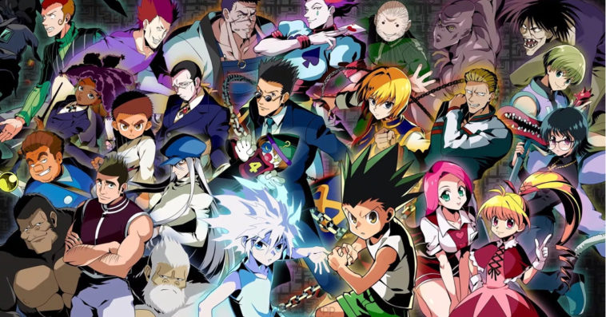

I was born and raised in Hawaii. I'm 18 years old and currently enrolled at James Campbell High School. I love to draw, write stories, and I'm hoping to find a way to put that passion to good use. Three things that I enjoy the most are:
I grew up on anime and it has been one of the things that I am obsessed with. From character designs to interesting plots, I can't get enough. Three of my favorites are Naruto, HunterxHunter, and My Hero Academia.
Music is like a beam of light that keeps me out of the dark as I walk down the road of life. There has never been a day where I went on without listening to a song. I will always be listening to music. I'm a listener of all genres as I love to enlarge my playlist. Typically I listen to Pop, Rap, and recently jumped on the Kpop train. Those are the very few genres I listen to.
I have been playing video games for as long as I can remember. Like the listed above interests, it's something that I will never get tired of doing. Always playing video games on my free time. I play multiple games but three games I can't stop playing are Fortnite, Super Smash Bros Ultimate, and Paladins.